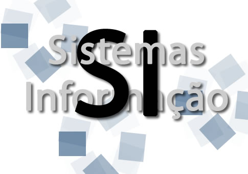

Sistemas de Informação 1 - SI 1

O objetivo da disciplina é discutir técnicas de projeto de software. Haverá foco particular em técnicas utilizadas para melhorar o reuso e a flexibilidade de software desenvolvido usando Orientação a Objeto, mas discutiremos também projeto arquitetural. O contexto de todas as aplicações será a web. Assim, você também acabará a disciplina sabendo desenvolver sistemas web.
Sobre o curso
Objetivos
No final do curso, você deve ser capaz de:
- Descrever os objetivos do projeto de software e seu papel no desenvolvimento de um software
- Definir o que são padrões de projeto e nomear um conjunto de padrões
- Criticar a necessidade e/ou oportunidade da aplicação de padrões em um contexto
- Descrever e criticar uma arquitetura de software
- Aplicar boas práticas e padrões de projeto na transformação de uma especificação em um projeto flexível e reutilizável
- Produzir um software complexo utilizando boas práticas e padrões de projeto
- Produzir um software web que utilize tecnologias atualmente populares no mercado
- Conectar o software sendo implementado às necessidades do cliente que o demanda
- Criar software multithreaded
- A avaliação será pautada por estes objetivos de aprendizagem.
Conteúdo
Fundamentos; princípios de design (modularidade, coesão, acoplamento); paradigmas de design (funcional, orientado a objetos, outros); projeto orientado a objetos; linguagem de modelagem; abstração, herança, interfaces; bibliotecas e frameworks; padrões de design; noções de arquitetura de software.
Avaliação
Há 3 tipos de avaliação: minitestes, labs e um projeto. As avaliações de cada tipo resultam em uma média, e as médias têm os pesos 35%, 30% e 35%, respectivamente.
Minitestes
Os minitestes acontecem em quase qualquer aula. Como você pode faltar 25% das aulas, você pode também perder 25% dos minitestes. Para simplificar reposições, os 25% das notas mais baixas de minitestes são desconsiderados para todos os alunos. Veja que por isso você não precisa justificar faltas em minitestes, e não é possível repor minitestes. Os minitestes avaliam principalmente os objetivos de aprendizagem 1-5.
Há exemplos de minitestes na seção de exercícios do site.
Labs
Os labs são atividades de programação relativamente pequenas que exercitam os conceitos vistos no curso e as tecnologias necessárias para o desenvolvimento do projeto. Os labs avaliarão principalmente os objetivos de aprendizagem 6, 8 e 9, e nos ajudarão a ganhar intimidade com as tecnologias usadas no projeto. Mais detalhes sobre os labs na página específica de labs neste site.
Projeto
A especificação do projeto será liberada apenas após as primeiras semanas de aula.
O projeto é desenvolvido em grupo e composto de três milestones (com pesos iguais na nota final), e o não cumprimento de qualquer um dos milestones acarretará em um zero na avaliação do projeto. Mais detalhes sobre o projeto na página específica do projeto neste site.